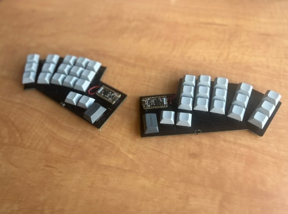

Welcome
I am a computer science undergraduate at the University of Toronto.
Showcased Project
I designed and built the "Niniergo Split," a custom keyboard shaped specifically for my hand. Read more about my project here!

Finished Niniergo Split.
Bio
I was born in Seattle, WA and finished high school right across Lake Washington in Bellevue. While living in the Pacific Northwest, I enjoyed biking around Lake Sammamish and exploring several parks around the Eastside, such as Central Park in Issaquah and Luther Burbank Park on Mercer Island.
Currently, I am a fourth-year undergraduate in Computer Science at the University of Toronto. I am taking the following course load: Programming on the Web (CSC309), Introduction to Image Understanding (CSC420), Compilers and Interpreters (CSC488).